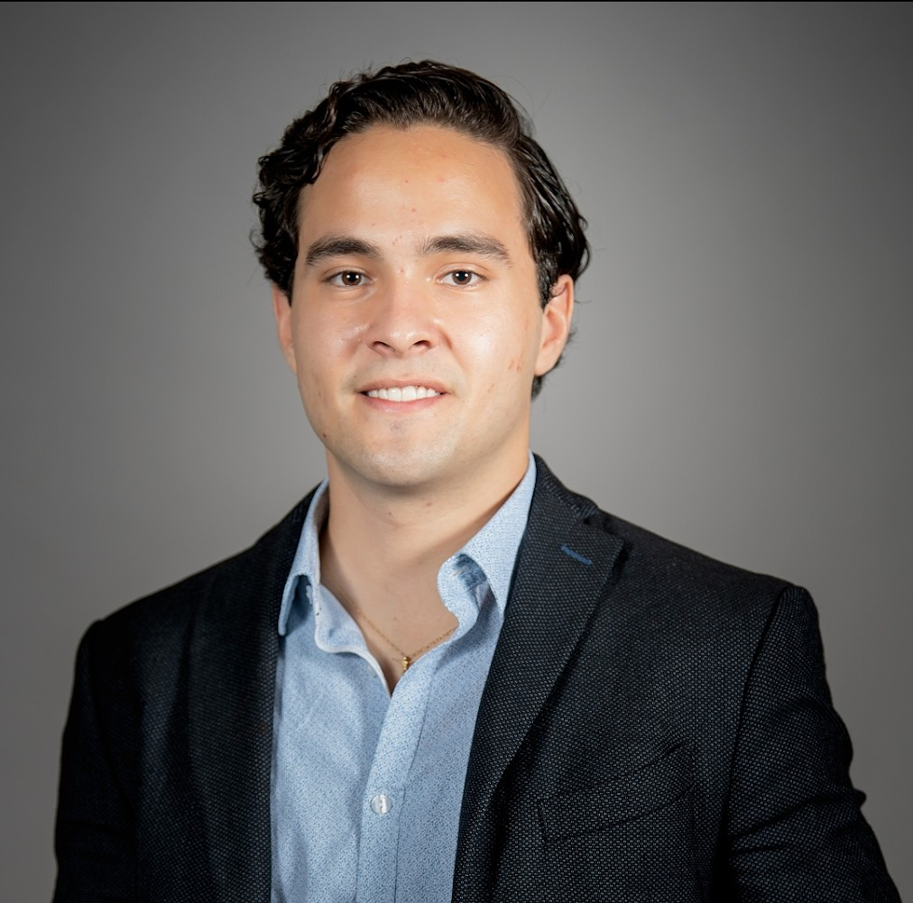

Hola, soy Antonio.
Convierto datos en decisiones.
Ingeniero en Ciencias de Datos y Matemáticas del Tec de Monterrey. Combino análisis cuantitativo con ventas consultivas B2B: pitcheo, construyo el caso de negocio, y ejecuto la prueba de concepto yo mismo, de principio a fin.

Mexicano, basado en Monterrey. Firmo como Antonio J. Zárate L. Mi papá y mi abuelo también se llaman Antonio, así que el "J." y la "L." son para que no nos confundan.
Empecé en Kuona Analytics como practicante de análisis de datos y crecí internamente durante 5 años y 8 meses hasta liderar soluciones de Revenue Growth Management (RGM) de punta a punta para clientes enterprise en LATAM, combinando siempre una pata técnica/AI-driven con una comercial, al estilo Forward Deployed Engineer: entender al cliente, construir la solución, y cerrarla.
Hoy en Nufi soy Key Account Manager, enfocado en nuevo negocio para el portafolio de background checks, KYB (Know Your Business) y procesamiento de documentos.
Fuera del trabajo, me apasiona el deporte: verlo, jugarlo y coachearlo. Soy más Rayado que culé (sí, más Monterrey que Barça) y en mi tiempo libre estoy construyendo un optimizador de alineaciones con modelos predictivos para análisis de datos deportivos: por ahora es puro work in progress, no tengo nada terminado todavía, pero es de las cosas que más disfruto hacer. Durante mi estancia en CEMEX Praga me certifiqué como "Tapster" de la primera cerveza tipo Pilsner de la historia, Pilsner Urquell. De las cosas más random y divertidas que he hecho. Nunca dejo de aprender: es lo que más disfruto.
De practicante a Key Account Manager
Seis roles internos en Kuona Analytics antes de dar el salto a Nufi. Cada uno sumando una capa más técnica o más comercial.
Nuevo negocio (hunter) para el portafolio de background checks y KYB (Know Your Business), más procesamiento de documentos. Híbrido, reportando a liderazgo comercial.
Entendimiento de necesidades del cliente/prospecto tanto para pitchar como para vender y ejecutar POCs end-to-end. Lideré una prueba de concepto con un retailer Fortune 500 con operación en México, cerrando $350K+ USD en valor anual, actuando de facto como Solutions Architect. Colaboré en el desarrollo de un optimizador de trade promotion para Empresas Polar.
Rol híbrido en dos equipos a la vez: optimización de promociones y producto de precios. Lideré metodologías de producto y la optimización de pricing y promociones de todo el año.
Acompañamiento a clientes enterprise clave con insights de pricing, promoción y RGM.
Transición de un rol analítico a responsabilidades directas de cara al cliente, profundizando relaciones en torno a insights de RGM.
Análisis avanzado de elasticidad precio de la demanda, promociones y puntos de precio. Desarrollo de nuevos módulos de demo con capacidades analíticas/IA.
Desarrollo de 2 algoritmos de IA para impulsar la venta cruzada de aditivos, presentando resultados directamente a VPs.
Inicio en Kuona: análisis reactivo y proactivo para clientes, y soporte en la calidad y lanzamiento de nuevos módulos analíticos.
Un perfil híbrido: comercial + técnico
Comercial / RGM
Técnico / Analítico
Idiomas & Generales
Del pricing enterprise a mis proyectos propios
Casos que combinan mi lado técnico y mi lado comercial, dentro y fuera de la oficina.
POC de RGM con retailer Fortune 500
Discovery, implementación, análisis de datos y entrega de recomendaciones de RGM de punta a punta para un retailer Fortune 500 con operación en México, actuando de facto como Solutions Architect.
Optimizador de Trade Promotion
Colaboré en el desarrollo de un simulador/optimizador de metas de compra para el mercado cervecero venezolano (Empresas Polar), asegurando el correcto entendimiento del cliente para el equipo de producto.
Ascenda.ai
Socio en Ascenda, una empresa de estrategia y ejecución de IA para compañías dirigidas por sus dueños: diseñan el modelo operativo (personas, software e IA) y luego construyen y operan la capacidad de IA para ejecutarlo.
Sonet
Red social propia para la comunidad de música, en desarrollo. Proyecto personal fuera del trabajo, construido en TypeScript.
Venta de cruceros
Vendo paquetes de cruceros de forma independiente en alianza con Expedia. Otro lado comercial fuera de mi trabajo de tiempo completo.
Match Preparation & Lineup Optimizer
Nada terminado todavía: estoy construyendo un backend propio en Python y dashboard interactivo en HTML, integrando datos abiertos de StatsBomb y un modelo predictivo de resultado (Gradient Boosting). Puro work in progress, pero de lo que más disfruto hacer.